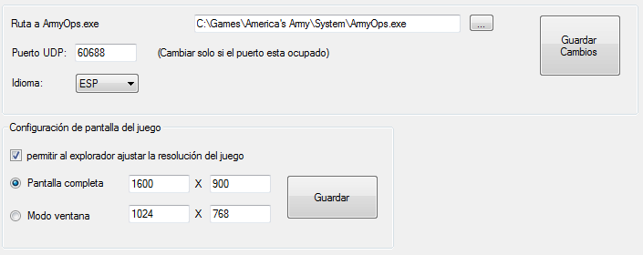

Ayuda Explorador AA
v1.2.1
Configuración del software
Como escoger un servidor
para jugar
Como unirse a un servidor
Como unirse a
servidores no listados
Map is not available for
download through DCDS
LAN/PRACTICA
Unirse al servidor
creado mediante el explorador
Unirse al servidor por
medio del explorador del juego
Opción Run Server in CMD
Como crear un servidor
por internet (usando la conexión de tu casa)
Como crear un servidor con
una IP dinámica
Como crear un servidor
con una IP estática
Consideraciones con los
puertos
Como cambio la
resolución de pantalla del juego
Como modifico el FOV
(campo de vision)
CONFIGURACIÓN
DEL SOFTWARE
La única configuración a realizar es establecer la ruta al archivo ArmyOps.exe.
El archivo ArmyOps.exe
se encuentra localizado en la carpeta
System en el directorio de instalación del juego.
También puedes elegir el idioma. Idiomas disponibles: inglés, español, alemán, holandés y Coreano.
No te olvides hacer clic en el botón “Guardar
Cambios”
para guardar los ajustes.
No es necesario cambiar el puerto UDP
a menos que este puerto este ocupado.

COMO
ESCOGER UN SERVIDOR PARA
JUGAR
Para escoger un servidor debes mirar el valor del PING. Mientras más
alto sea el valor del PING
mayor retraso experimentaras en el juego. Debes tratar de escoger
el servidor que tenga el menor valor de PING.
Es recomendable que escojas el servidor de color verde que tenga el
menor valor de PING
para disfrutar de una buena jugabilidad.
Acerca
de los servidores de color Amarillo y Rojo, depende de ti ver si tienes
una jugabilidad aceptable en esos servidores. (Tendrás que ver cuánto
retraso obtienes en esos servidores)
NOTA: los
servidores verdes tienen valores menores a 150, los servidores
amarillos tienen valores entre 150
y 250, y los
servidores rojos son aquellos que tienen valores de PING mayores a 250
COMO
UNIRSE A UN SERVIDOR
Verifica que la opción “Internet este marcada” (1), Selecciona
un servidor de la lista (2), ingresa tu nombre de usuario (3) y
finalmente haz clic en el botón "Unirse Servidor" (4) como se muestra
en
la siguiente imagen.
Si quieres unirte al servidor como Jugador Administrador, solo tienes
que ingresar la contraseña en el campo “Contraseña JugadorAdmin”.
Los
servidores que aparecen con un candado en el lado izquierdo son
servidores que tienen contraseña y para poder unirte debes ingresar la
contraseña en el campo “Contraseña
juego”
COMO UNIRSE A
SERVIDORES NO
LISTADOS
Si
conoces un servidor que no aparece en la lista y conoces su dirección
IP y el puerto del servidor, puedes unirte de la siguiente manera:
Solo marca la casilla, ingresa la dirección IP y el Puerto, y
finalmente haz clic en el botón Unirse.
MAP
IS NOT AVAILABLE FOR
DOWNLOAD THROUGH DCDS
Si
te sale este mensaje después de unirte a un servidor, eso quiere decir
que tu juego no tiene disponible ese mapa o que el mapa del servidor es
una versión diferente a la que tu juego tiene. Para solucionar este
problema solo debes descargar el mapa y copiarlo dentro la carpeta Maps que se
encuentra en el directorio de instalación del juego. Para descargar el
mapa puedes tratar de contactar al dueño del servidor.
LAN/PRACTICA
Esta
sección te permite crear un servidor local en tu PC ya sea para
explorar los mapas o para practicar o para jugar en red local con tus
amigos.
Cuando creas un servidor local en la sección “server status”
aparecerá el texto “completed
Loading”
como se muestra en la imagen. Cuando aparece este texto significa que
el servidor ha terminado de cargarse y ahora ya puedes unirte a él.
Para
unirte al servidor creado tienes dos alternativas, puedes hacerlo
mediante el explorador o puedes hacerlo desde el explorador del juego.
Unirse al
servidor creado mediante el
explorador
Una vez que el servidor ha
terminado de cargarse verifica que la opción LAN este marcada
(1), selecciona el servidor
creado (2), ingresa tu nombre de usuario (3) y
finalmente haz clic en el botón "Unirse Servidor" (4) como se muestra
en
la siguiente imagen.
servidor” (3)
Unirse al
servidor por medio del explorador del juego
Ejecuta el archivo “ArmyOps.exe”
y una vez dentro del juego usa el explorador del juego, ve a la sección
LAN y allí
veras listado el servidor como se muestra en la siguiente imagen,
selecciona el servidor y haz clic en el botón “Join server”
Opción
Run Server in CMD
Si
creas un servidor con esta opción marcada, se creara un servidor en el
CMD de manera que si cierras el explorador el servidor no se cerrara.
Usa esta opción si deseas que tu servidor no se cierre cuando cierres
el explorador.
NOTA:
Es Importante que entiendas que esta sección es solo para crear un
servidor local en LAN. No sirve para crear un servidor por
internet. Si quieres crear un servidor por internet es necesario
realizar algunas tareas adicionales de manera que tu servidor funcione
adecuadamente y aparesca listado en el explorador.
COMO
CREAR UN SERVIDOR POR
INTERNET (usando la conexión de tu casa)
Antes
de crear un servidor por internet debes estar consiente de que al
hacerlo estas asumiendo una responsabilidad. Ya que tienes que
asegurarte de velar por su correcto funcionamiento, que este siempre
disponible para los jugadores e incluso tienes la responsabilidad de
poner orden entre los jugadores si es necesario.
Adicionalmente
debes estar consiente que no por montar un servidor y hacer
que
aparezca listado los jugadores vayan a usar tu servidor. Si quieres que
tu servidor sea usado tendrás que atraer jugadores que quieran jugar en
él y eso quiere decir que deberás trabajar en ello.
Hechas las advertencias entonces comencemos.
Las
siguientes instrucciones asumen que quieres crear un servidor por
internet que aparezca listado en el explorador. y para ello necesitas
contar con una buena conexión de internet, tu velocidad de subida
minimo tiene que ser de 1
Mbit.
Lo primero es que determines si tienes una IP estática o una IP dinámica
(Generalmente la mayoría de conexiones de internet tienen IPs Dinámicas)
¿Cuál es la diferencia
entre una IP estática y una dinámica?
R.- Una dirección IP
estática es una dirección que no cambia, Una dirección IP dinámica
es una dirección que cambia cada vez que apagas o reinicias tu
modem/router.
COMO CREAR
UN SERVIDOR CON UNA IP DINÁMICA
No
es recomendable crear un servidor de cualquier tipo usando una IP
dinámica debido a que este servidor ya no podrá ser accesible a los
usuarios cuando la dirección IP cambie. Afortunadamente
existen
servicios gratuitos en internet que te permiten montar un servidor con
una IP dinámica.
El servicio que te permite hacer esto se llama DDNS (Dynamic Domain Name System).
Existen varias compañías que te ofrecen gratuitamente este servicio en
internet, solo tienes que buscarlos.
Con DDNS,
básicamente obtendrás un nombre de dominio (por ejemplo:
tu_dominio.ddns.net) luego tendrás que instalar en tu pc un programa
que se encargara de actualizar tu dirección IP dinámica de manera que
tu nombre de dominio siempre este enlazado a tu dirección IP
actualizada. De esta manera cualquiera que use tu nombre de domino
siempre podrá acceder a tu servidor sin importar que la IP de tu modem
cambie.
Lo primero que tienes que hacer es obtener un nombre de
dominio por medio de las empresas que te ofrecen el servicio de DDNS.
Para esto solo debes seguir las instrucciones que te ofrecen cada una
de estas compañías.
Lo segundo que tienes que hacer es preparar tu modem para reenviar los
puertos (port forwarding)
que el servidor necesita para estar en línea. Para ello tendras que
revisar el manual de tu modem y ver como se hace el reenvió de puertos (port forwarding).
Los puertos que necesitas reenviar para tener un servidor AA son : UDP 1716, UDP 1717 y UDP 7778.
Una
vez hayas configurado adecuadamente el reenvio de puertos, estas listo
para ejecutar tu servidor. Para ello ejecuta el explorador, ve a la
pestaña LAN/practica y crea un servidor. Es recomendable que marques la
opción “Run server in
CMD”
para que no vayas a cerrar accidentalmente el servidor cuando cierres
el explorador. Para probar que tu servidor está en línea
puedes
pedirle a alguien que se conecte usando el método para unirse a
servidores no listados, debes proporcionar la dirección IP de tu modem
y el puerto 1716.
Lo último que tienes que hacer es hacer que tu
servidor aparezca listado en el explorador y para ello lo único que
tienes que hacer es contactar a los muchachos de Chevys-Place
y pedirles que rastreen tu servidor.
IMPORTANTE:
Chevys-Place solo rastrea servidores que la mayoría del tiempo se
encuentren en línea, si tu servidor la mayor parte del tiempo se
encuentra fuera de línea dejara de ser rastreado y ya no aparecerá
listado en el explorador.
Los datos que debes proporcionar para que tu servidor sea rastreado por
Chevys-Place son:
- El nombre de tu servidor
(El nombre que introdujiste cuando creaste tu servidor)
- El nombre de tu dominio (El cual obtuviste de un proveedor de DDNS)
- El puerto del Juego 1716
- el Query port 7778
COMO CREAR
UN SERVIDOR CON UNA IP ESTÁTICA
Lo
primero que tienes que hacer es preparar tu modem para reenviar los
puertos (port forwarding) que el servidor necesita para estar en línea.
Para ello tendras que revisar el manual de tu modem y ver como se hace
el reenvió de puertos (port forwarding). Los puertos que necesitas
reenviar para tener un servidor AA son: UDP 1716, UDP 1716 y UDP 7778.
Una
vez hayas configurado adecuadamente el reenvio de puertos, estás listo
para ejecutar tu servidor. Para ello ejecuta el explorador, ve a la
pestaña LAN/practica y crea un servidor. Es recomendable que marques la
opción “Run server in CMD” para que no vayas a cerrar accidentalmente
el servidor cuando cierres el explorador. Para probar que tu servidor
está en línea puedes pedirle a alguien que se conecte usando
el
método para unirse a servidores no listados, debes proporcionar la
dirección IP de tu modem y el puerto 1716.
Lo último que tienes
que hacer es hacer que tu servidor aparezca listado en el explorador y
para ello lo único que tienes que hacer es contactar a los muchachos de
Chevys-Place
y pedirles que rastreen tu servidor.
IMPORTANTE:
Chevys-Place solo rastrea servidores que la mayoría del tiempo se
encuentren en línea, si tu servidor la mayor parte del tiempo se
encuentra fuera de línea dejara de ser rastreado y ya no aparecerá
listado en el explorador.
Los datos que debes proporcionar para que tu servidor sea rastreado por
Chevys-Place son:
- El nombre de tu servidor
(El nombre que introdujiste cuando creaste tu servidor)
- La IP externa de tu modem
- El puerto del Juego 1716
- El Query port 7778
CONSIDERACIONES
CON LOS PUERTOS
Puerto 1716
Es un puerto que puedes cambiar si fuera necesario. Para cambiar este
puerto debes abrir el archivo server.ini
localizado en la carpeta
system en el directorio de instalación del juego, busca la
sección [url]
y edita la línea Port=1716.
No olvides que si cambias este puerto debes renviarlo en el modem.
Puerto 7778
Este es el Query port
y no puede ser modificado por el usuario. En caso que este puerto este
ocupado el servidor automáticamente usara el siguiente puerto libre a
este. Es recomendable reenviar puertos en un intervalo, por
ejemplo del puerto UDP 7778 al 7790.
NOTA
IMPORTANTE:
Es obligatorio que tu servidor use el puerto 7778 como query port para
que el explorador pueda añadirlo a la lista. Caso contrario tu servidor
no aparecerá en el explorador.
COMO CAMBIO LA
RESOLUCIÓN DE
PANTALLA DEL JUEGO
Puedes
cambiar la resolución de pantalla del juego desde la pestaña
“Configuración” o también puedes hacerlo desde el archivo
ArmyOps.ini como se detalla a continuación.
Si
la resolución que deseas no está disponible en la configuración del
juego, para cambiar la resolución de pantalla del juego necesitas abrir
el archivo ArmyOps.ini
que se encuentra localizado en la carpeta
System del directorio de instalación del Juego.
Una vez hayas abierto el archivo ArmyOps.ini
en la sección [WinDrv.WindowsClient]
edita las siguientes líneas como se muestran en la imagen. Recuerda
Guardar los cambios.
NOTA: La
relación de aspecto original del juego es 4:3. Si vas a
cambiar la resolución de pantalla para monitores de 16:9 o 16:10 entonces es
recomendable que cambies el campo
de visión (FOV).
Si quieres jugar con una buena proporción de imagen y no tener que
estar preocupándote de cambiar el campo de visión FOV te recomiendo que
juegues en modo ventana con una relación de aspecto 4:3.
COMO MODIFICO EL FOV
(CAMPO DE
VISION)
Para cambiar el FOV
necesitas abrir el archivo User.ini
que se encuentra localizado en la carpeta
System en el directorio de instalación del juego.
Una vez abierto el archivo User.ini
en la sección [Engine.PlayerController]
encuentra estas lineas:
DesiredFOV=90.000000
DefaultFOV=90.000000
Cambia los valores para tener el FOV
de tu preferencia. Se recomienda 90
para pantallas 4:3,
100 para
pantallas 16:10,
y 105
para pantallas de 16:9.
Recuerda guardar los cambios.
NOTA: Por
experiencia puedo afirmar que cambiar el FOV no funciona en
todas las computadoras, creo que depende de la tarjeta de video.